开心果 Need Car · 2023-09-05T11:33:00+08:00 · 微信原文
本文基于TC397+Tasking实现SMP（Symmetric Multi-Processing，对称多处理），这里的多核属于同构多核。相对于SMP，AMP（Asymmetric Multi-Processing，非对称多处理）主要用于异构多核处理。
本文，主要记录RTThread多核实现过程中的"雷区"。
1、RTThread多核实现细节
（一）各Core实现硬件初始化
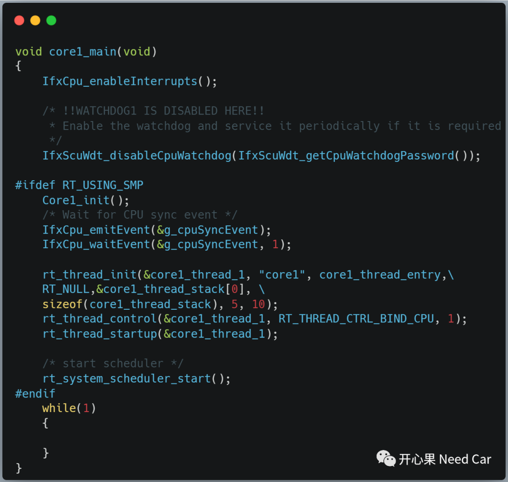
（二）任务初始化
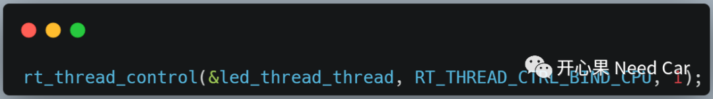
（三）线程间任务切换
如果不是systick触发的线程切换，即：由于线程状态挂起触发的线程切换时，需要判断线程是否上锁，如果已经解锁，则需要解锁之后在进行线程切换，避免死锁。多核rt_hw_context_switch()的接口实现如下所示：
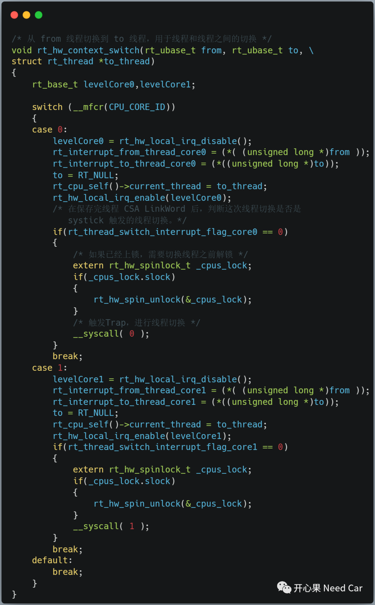
（四）中断切换标志置位时机
每次程序进入系统心跳中断服务例程时，需要先置位中断切换标志Flag，完成系统心跳的累加后复位。注意：不同于单核处理，多核处理中，此处还需要对中断切换进行处理，即：判断程序是否超时，如果超时，则对应的pcpu->irq_switch_flag置位，需要进行中断线程切换处理。代码实现如下所示：
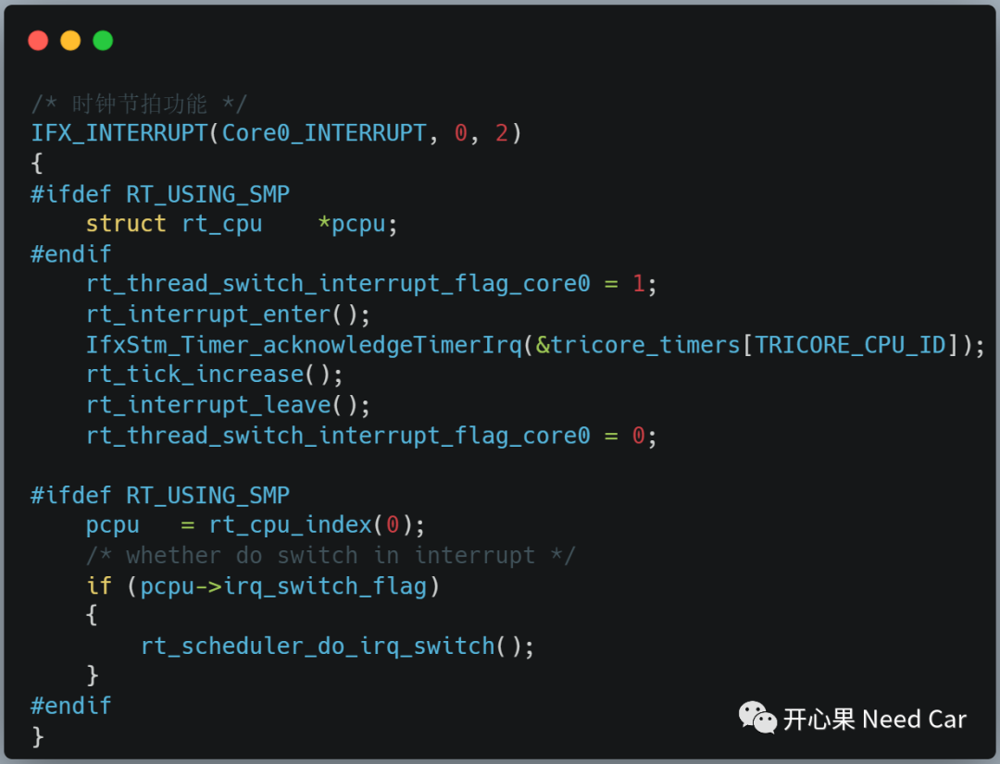
（五）线程上锁/解锁操作
上锁处理，对应代码实现如下所示：
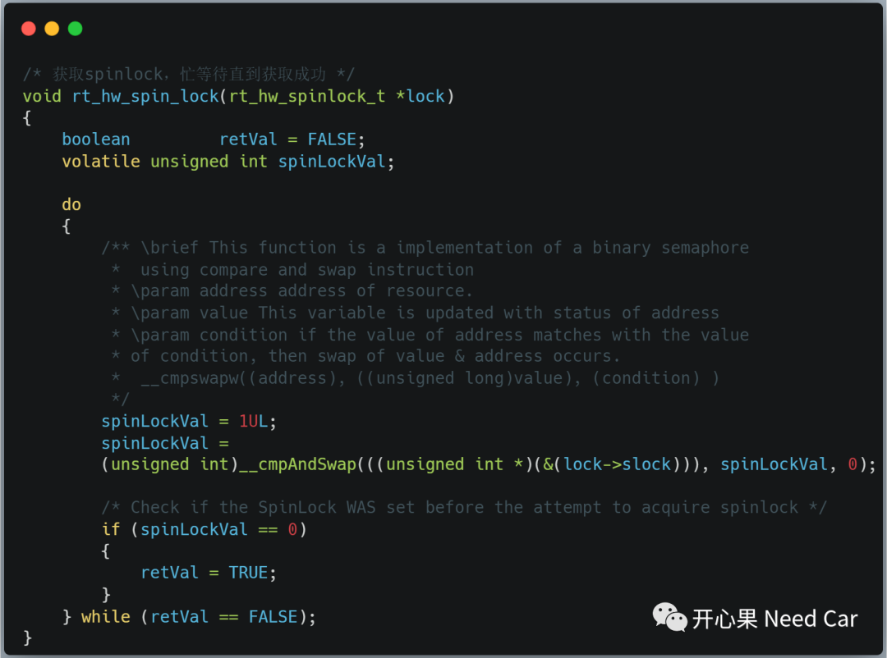
解释：__cmpswapw((address), ((unsigned long)value), (condition) )，上锁处理时，如果address处的值==condition，则将value值赋写到address位置。在Tricore架构中，__cmpswapw操作是原子操作，可以避免多核的并行访问。
解锁处理，对应的代码实现如下所示：
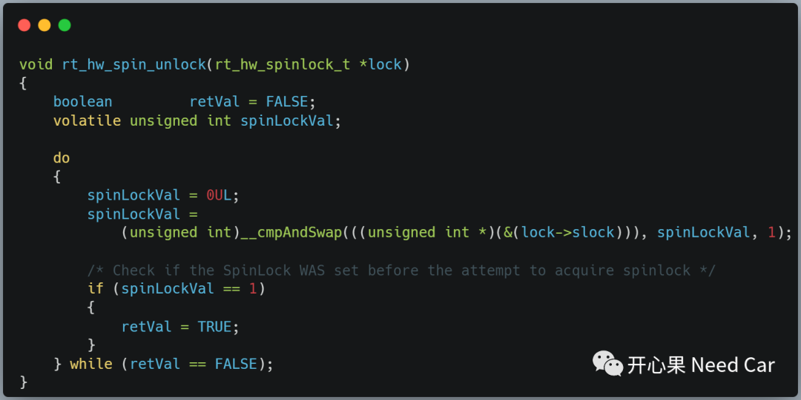
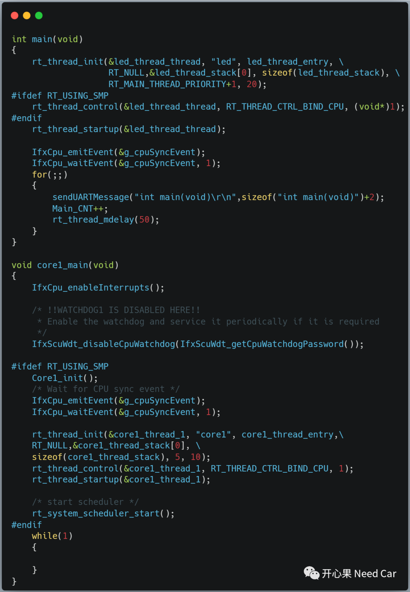
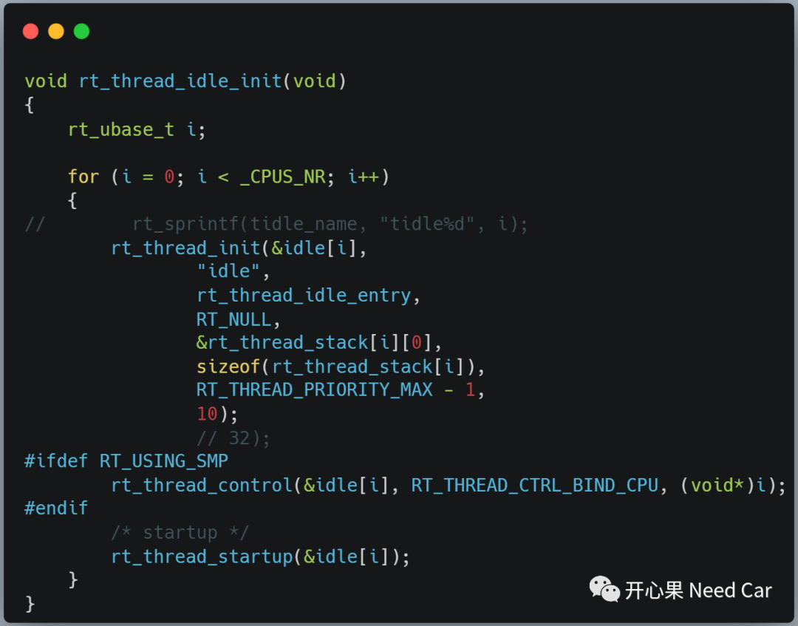
（八）确认线程是否在目标Core运行
如果想确认线程是否在目标Core运行，在目标线程设置一个断点（Breakpoint）即可，如下所示：
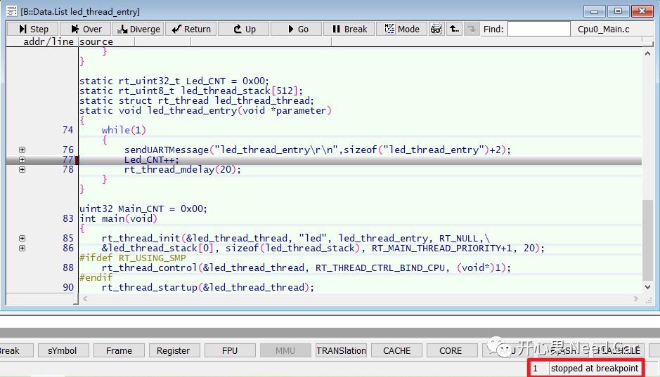
2、RTThread任务调度
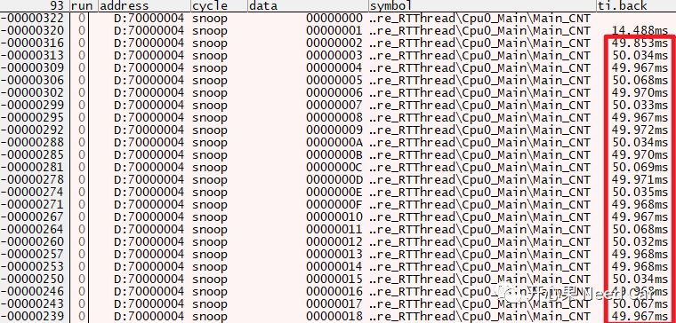
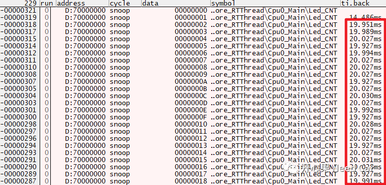
（三）core1_thread_1运行周期
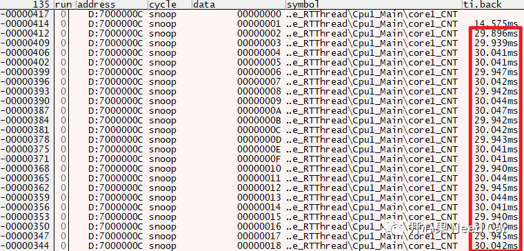
2、源码链接
多核与单核的切换，在rtconfig.h文件中，使能或者关闭宏RT_USING_SMP即可打开/禁用SMP。
本文的RTThread中，启用了2个Core（主核Core0，一个从核Core1）,如果需要启用更多的从核，可以在本文的基础上打开其余从核，其余从核的处理与Core1类似。
受限于时间和我的水平，本文在零零碎碎的时间里整理完，实现未必最优。而且，我并未严格的按照RTThread的架构处理，写的稍微有些随心所欲。大家可以基于我的工程进行调试和二次开发，以便于达到理解OS内核、任务切换等相关知识。
源码链接地址如下：
https://github.com/Kaixinguo2021/Tasking_TC397_MultiCore_RTThread.git
往期精彩回顾